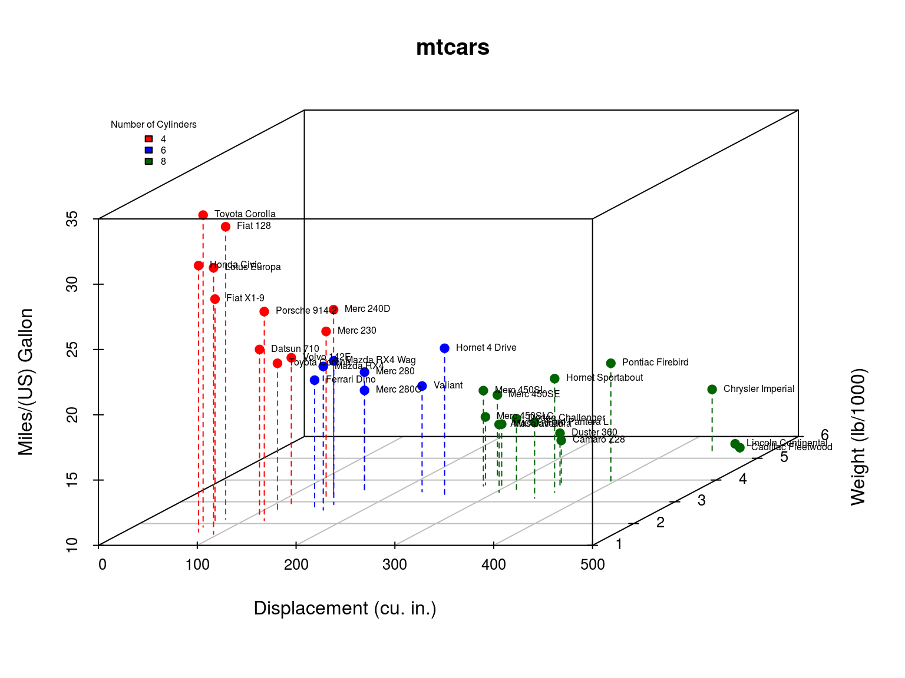
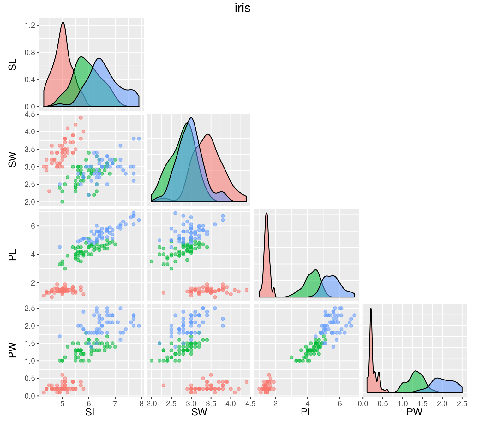

mtcars: Fuel consumption and 10 aspects of automobile design and performance for 32 automobiles. A data frame with 32 observations on 11 variables:
head(mtcars)## mpg cyl disp hp drat wt qsec vs am gear carb
## Mazda RX4 21.0 6 160 110 3.90 2.620 16.46 0 1 4 4
## Mazda RX4 Wag 21.0 6 160 110 3.90 2.875 17.02 0 1 4 4
## Datsun 710 22.8 4 108 93 3.85 2.320 18.61 1 1 4 1
## Hornet 4 Drive 21.4 6 258 110 3.08 3.215 19.44 1 0 3 1
## Hornet Sportabout 18.7 8 360 175 3.15 3.440 17.02 0 0 3 2
## Valiant 18.1 6 225 105 2.76 3.460 20.22 1 0 3 1
iris: Gives the measurements in centimeters of the variables sepal length and width and petal length and width, respectively, for 50 flowers from each of 3 species of iris. A data frame with 150 cases (rows) and 5 variables (columns) named:
head(iris)## Sepal.Length Sepal.Width Petal.Length Petal.Width Species
## 1 5.1 3.5 1.4 0.2 setosa
## 2 4.9 3.0 1.4 0.2 setosa
## 3 4.7 3.2 1.3 0.2 setosa
## 4 4.6 3.1 1.5 0.2 setosa
## 5 5.0 3.6 1.4 0.2 setosa
## 6 5.4 3.9 1.7 0.4 setosa
Generates a one-level decision tree expressed in the form of a set of rules that all test one particular attribute. 1R chooses the attribute that produces rules with the smallest error rate.
mod.oner <- OneR(Species ~ ., data = iris)
print(mod.oner)## Petal.Width:
## < 0.8 -> setosa
## < 1.75 -> versicolor
## >= 1.75 -> virginica
## (144/150 instances correct)Constructed by first using a decision tree induction algorithm minimizing intrasubset variation in the class values down each branch.
Splitting criterion: Maximize standard deviation reduction, \[ SDR = sd(T) − \sum_i{\frac{|T_i|}{|T|} * sd(T_i)}, \] where \(T_1, T_2, ...\) are the sets that result from splitting the node according to the chosen attribute, and \(sd(T)\) is the standard deviation of the class values.
A linear model is built for each interior node of the tree and using a greedy search removes variables that contribute little. M5 then applies pruning by subtree replacement. And finally the prediction accuracy is improved by a smoothing process, \[
PV(S) = \frac{n_i \times PV(S_i) + k \times M(S)}{n_i + k},
\] where \(PV(S_i)\) is the predicted value at branch \(S_i\) of subtree S,
\(M(S)\) is the value given by the model at \(S\),
\(n_i\) is the number of training cases at \(S_i\), and
\(k\) is a smoothing constant.
mod.m5 <- M5Rules(mpg ~ ., data = mtcars)
print(mod.m5)## M5 pruned model rules
## (using smoothed linear models) :
## Number of Rules : 2
##
## Rule: 1
## IF
## cyl > 5
## THEN
##
## mpg =
## -0.5389 * cyl
## + 0.0048 * disp
## - 0.0206 * hp
## - 3.0997 * wt
## + 34.4212 [21/26.733%]
##
## Rule: 2
##
## mpg =
## -0.1351 * disp
## + 40.872 [11/59.295%]RIPPER is a variant of the original IREP (incremental reduced error pruning, integration of reduced error pruning with a separate-and-conquer rule learning) algorithm with three modifications:
Alternative metric for guiding its pruning phase: Deletes of any final sequence of conditions from the rule to maximize the function \[ v^*(Rule, PrunePos, PruneNeg) \equiv \frac{p - n}{p + n}, \] where \(P\) (respectively \(N\)) is the total number of examples in \(PrunePos\) (\(PruneNeg\)) and \(p\) (\(n\)) is the number of examples in \(PrunePos\) (\(PruneNeg\)) covered by \(Rule\).
A new Stopping condition: After each rule is added, the total description length of the ruleset and the examples is computed, and stops adding rules when this description is more than d bits larger than the smallest description length obtained so far.
Optimization of initial rules learned by IREP: Considered in the order they were constructed, for each rule \(R_i\) two alternatives are constructed: a replacement \(R_i'\) (exclude \(R_i\) and minimize error of ruleset), and a revised \(R_i\) (greedily adding conditions to \(R_i\)). A MDL heuristic is used to decide whether the final theory should include the replacement, revised, or original rule.
mod.rip <- JRip(Species ~ ., data = iris)
print(mod.rip)## JRIP rules:
## ===========
##
## (Petal.Length <= 1.9) => Species=setosa (50.0/0.0)
## (Petal.Width <= 1.7) and (Petal.Length <= 4.9) => Species=versicolor (48.0/1.0)
## => Species=virginica (52.0/3.0)
##
## Number of Rules : 3